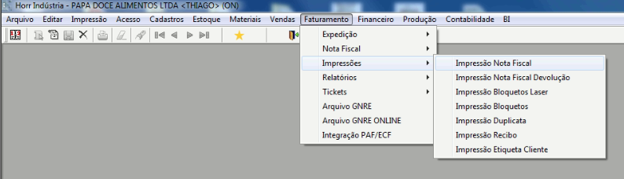
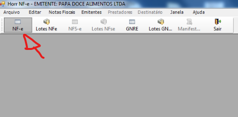

Cancelamento de Nota Fiscal Eletrônica (NF-e)
Para cancelar uma Nota Fiscal Eletrônica acesse Faturamento -> Impressões -> Impressão Nota Fiscal
Filtre por Cliente ou Numero da nota Fiscal e aperte F8 para carregar as notas.
Em seguida clique no botão da borrachalocalizado na parte superior da tela:

Em seguida informe o motivo do cancelamento e clique em OK

Em seguida Confirme o cancelamento:

Atenção!
Se o tempo da nota fiscal for maior que 24H você NÃO consiguirá cancelar essa nota fiscal pelo metodo convencional! Informe algúem responsável do Financeiro para realizar o Estrono desta Nota!
Se a nota acusar um tempo Menor que 24H clique em SIM

Abra o aplicativo Horr Nfe em seu computador:

Clique no botão NF-E no canto superior esquerdo:
Localize a nota pelo numero da Nota ou data de emissão
OBS: lembre-se de alterar a Situação da nota para "todos" ou "autorizada"

Por fim, clique em cancelar nota no botão vermelho do menu: